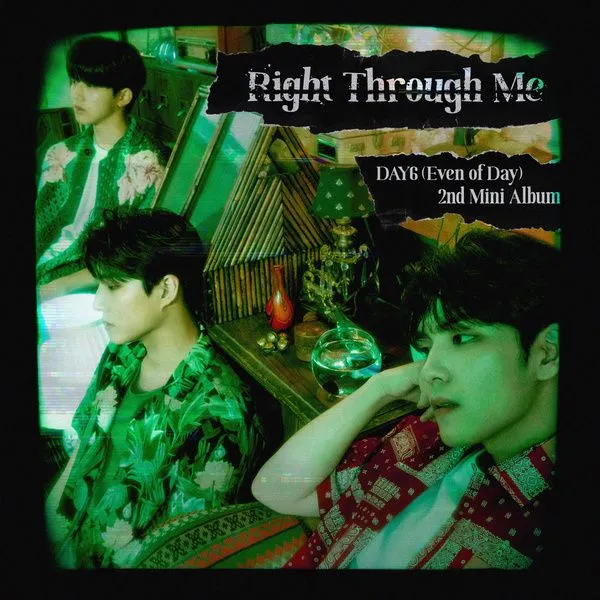

박지원
<div>아이들 - 10조
#미래의 프론트엔드 개발자
사용자의 입장에서 끊임없이 생각하고 고민하는 프론트엔드 개발자가 되고 싶은 박지원입니다.
이번 캠프를 통해 가장 배우고 싶은 것은 다른 팀원들과 협업하며 업무 커뮤니케이션 하는 법입니다.
#인생은 파도, 나는 서퍼
저의 삶의 모토가 되는 한 문장입니다. 인생은 파도처럼 굴곡이 있지만, 그 굴곡을 즐기면서 살아가고 싶습니다.
이번 부트캠프 과정에서도 분명 어렵고, 힘들고, 지칠 때가 있을 것이지만 그래도 그 굴곡을 서핑하며 즐기고 캠프를 완주해내고 싶어요!
#플레이리스트
제가 좋아하는 노래들을 소개합니다.

<
>
#버킷리스트
제가 앞으로 이루고 싶은 버킷리스트들을 소개합니다.
🎸 베이스 기타 배우기
평소에 락, 얼터너티브 장르의 노래를 즐겨들어서 베이스 사운드를 아주 좋아합니다! 그래서 올해는 드럼이나 베이스 기타를 배워보고 싶어요. Queen의 Another One Bites the Dust를 멋지게 연주하는게 목표입니다!
🗽 미국 동부 여행하기
미드 「프렌즈」를 보고 미국 동부, 특히 뉴욕에 대한 환상을 갖게 되었습니다. 센트럴 파크, 타임스퀘어, 자유의 여신상, 브루클린 브릿지 등 여러 명소를 여행하는 것이 꿈이고 음식은 미국 울프강 스테이크하우스의 스테이크를 꼭 먹어보고 싶습니다. 😋
👩💻 간지나는 개발자 되기
팀원들이 함께 일하고 싶어하는 간지나는 개발자가 되는 것 역시 저의 버킷리스트 중 하나입니다. 그 꿈을 이룰 수 있도록 계속해서 성장하는 꾸준한 사람이 되는 것이 저의 마지막 버킷리스트 입니다. 내일배움캠프 대원 여러분 모두 화이팅입니다!